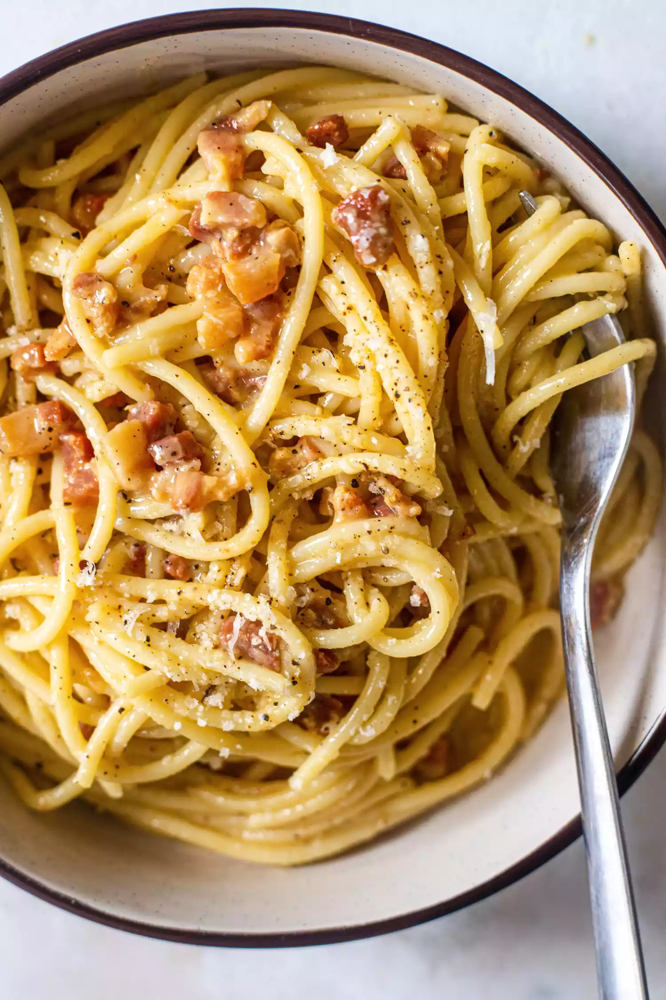

Carbonara

Spaghetti alla carbonara. Luscious and wonderfully indulgent, pasta
carbonara takes as long to make as it does to cook the pasta.
The ingredients are simple—just spaghetti (or another long pasta), and the
carbonara is made with pancetta or bacon, eggs, Parmesan, a little olive
oil, salt and pepper.
Ingredients
- 1 Tbsp extra virgin olive oil
- 1/2 lb pancetta or thick cut bacon
- 1 - 2 garlic cloves, minced
- 3 - 4 eggs
- 1 cup parmesan cheese
- 1 lb spaghetti
- salt and pepper to taste
Steps
- Heat pasta water
- Sauté pancetta and garlic in oil
- Beat eggs and half of the cheese
- Cook the pasta
- Toss pasta with pancetta
- Add beaten egg mixture